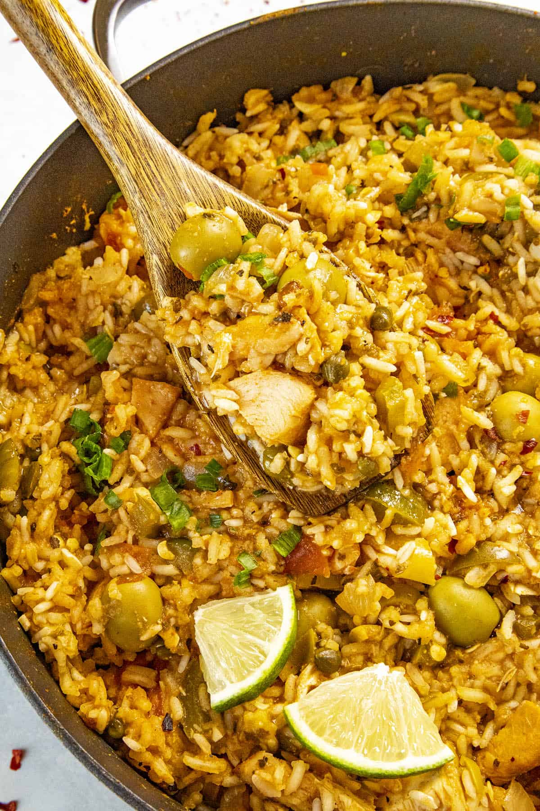

Odin Recipes
Arroz con Pollo

Arroz con pollo means "rice with chicken" in Spanish. It is a classic dish of Spain and Latin America, with many different traditional ways to prepare it, unique to various countries. An arroz con pollo you find in Cuba may be quite different than one you find in Peru. Please read the comments at the end of this recipe to see some wonderful classic versions of this dish
Ingredients
- 4 skinless, boneless chicken breast halves, cut into 1-inch pieces
- 1/2 teaspoon salt, divided
- 1/2 teaspoon ground black pepper, divided
- 1/2 teaspoon paprika, divided
- 3 tablespoons of vegetable oil
- 1 green bell pepper, chopped
- 3/4 cup chopped onion
- 1 1/2 teaspoons of minced garlic
- 1 cup of long-grain white rice
- 1 (14.5 ounce) can of chicken broth
- 1 (14.5 ounce) can of stewed tomatoes
- 1/2 cup of white wine
- 1/2 teaspoon of saffron
- 1 tablespoon of chopped fresh parsley
Steps
- Season chicken with a 1/4 teaspoon of salt, 1/4 teaspoon pepper, and 1/4 teaspoon paprika
- Heat oil in a large skillet over medium heat. Add seasoned chicken; cook and stir until no longer pink in the center and golden brown on all sides, about 10 minutes. Transfer chicken onto a plate; set aside.
- Add green pepper, onions, and garlic to the same skillet; cook and stir for 5 minutes. Add rice; cook and stir until rice is opaque, 1 to 2 minutes. Stir in broth, tomatoes, white wine, and saffron. Stir in remaining 1/4 teaspoon salt, 1/4 teaspoon pepper, and 1/4 teaspoon paprika; bring to a boil, cover, and simmer for 20 minutes.
- Add chicken and stir until heated through. Stir in parsley and serve.